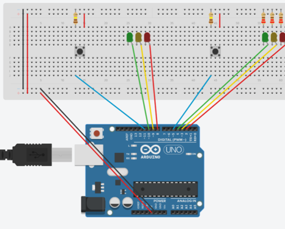
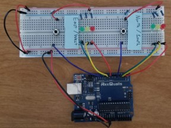
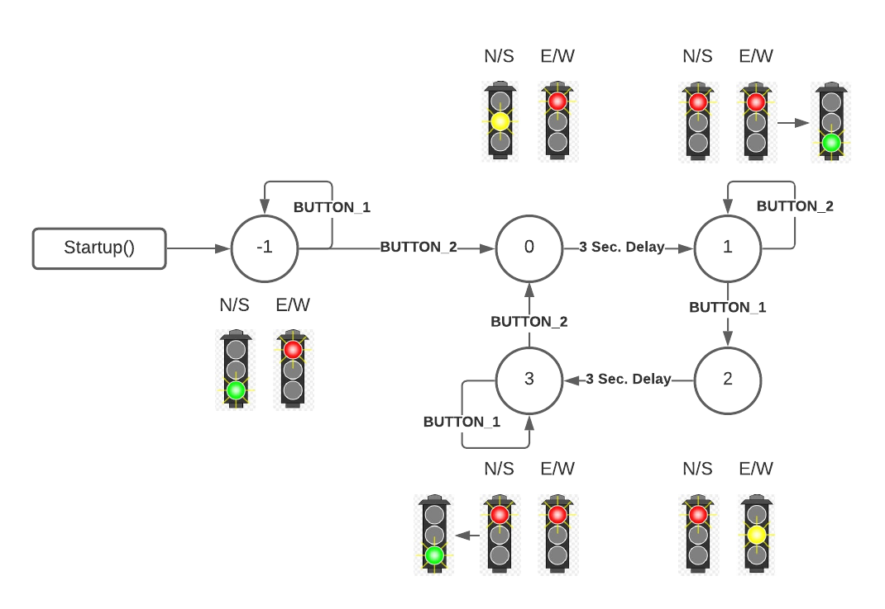

Traffic Light Control Board
Developed for EGR425: Real Time & Embedded Development
Summary
The traffic light control board was developed as a small-scale demonstration of the logic that goes into a traffic light. The program was developed on an Arduino Uno control board using C++. The software was developed as a Mealy Finite State Machine (FSM) that takes in inputs from the "traffic sensors" (represented by simple push switches) and then determines what state to move to next based on those inputs and the current state. The states are represented by the LEDs which are made to represent a traffic signal (Each set has a red, yellow, and green light).
Circuit Design
I designed a circuit schematic using an online tool that allows you to create circuit layouts for Arduino controllers. Then I used my Arduino Uno and some components that I had to create the circuit.
 Coding Logic
The following state diagram was developed and used to understand the logic that would go into the code of the FSM.
